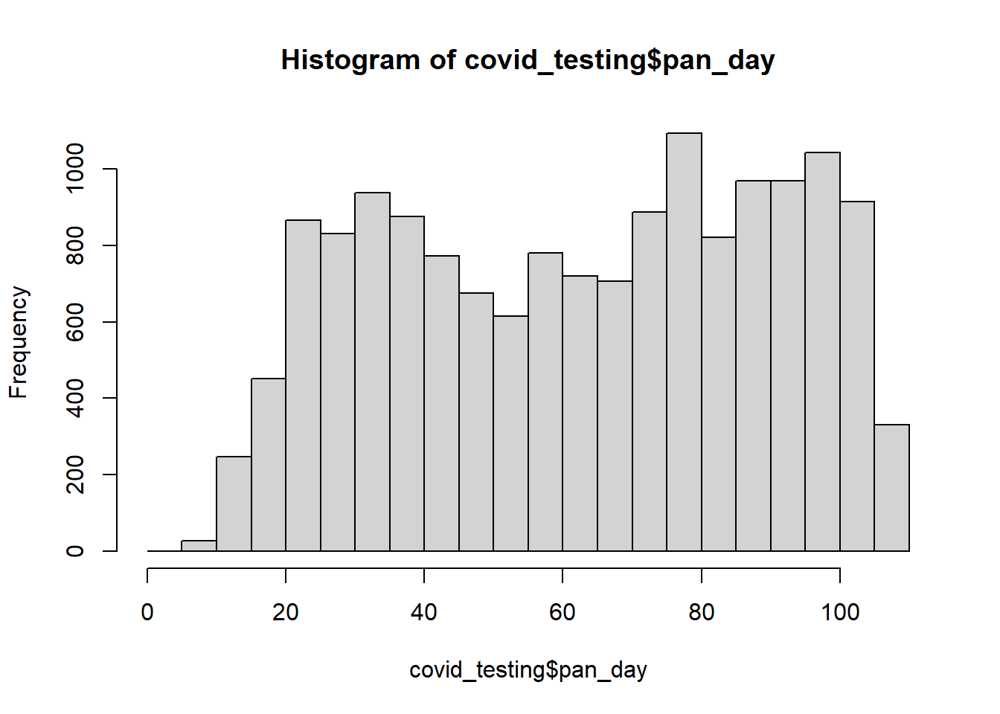

[1] "C:/Users/ujnam/Documents/Final_projects1/Final project/Final project/covid_testing.rda"R Final Project
Covid Testing
This is an analysis of a cross-sectional study of the de-identified data on COVID-19 testing, and provides a snapshot of the first 100 days of testing during the year 2020 at the Children’s Hospital of Pennsylvania (aka CHOP).
Initialising the libraries
This involves loading the installed packages to use the built-in functions in them
Descriptive statistics table
| Characteristic | female, N = 7,8321 | male, N = 7,6921 |
|---|---|---|
| Age | 9 (2, 18) | 9 (2, 18) |
| Pandemic day | 66 (38, 87) | 65 (38, 87) |
| Result | ||
| invalid | 146 (1.9%) | 155 (2.0%) |
| negative | 7,237 (92%) | 7,121 (93%) |
| positive | 449 (5.7%) | 416 (5.4%) |
| Payor | ||
| charity care | 9 (0.2%) | 6 (0.1%) |
| commercial | 1,863 (44%) | 1,863 (45%) |
| government | 1,864 (44%) | 1,780 (43%) |
| medical assistance | 46 (1.1%) | 38 (0.9%) |
| other | 13 (0.3%) | 6 (0.1%) |
| self pay | 114 (2.7%) | 102 (2.5%) |
| unassigned | 367 (8.6%) | 366 (8.8%) |
| Missing | 3,556 | 3,531 |
| Demographic | ||
| client | 314 (4.0%) | 290 (3.8%) |
| misc adult | 1,214 (16%) | 1,227 (16%) |
| other adult | 126 (1.6%) | 97 (1.3%) |
| patient | 6,178 (79%) | 6,077 (79%) |
| unidentified | 0 (0%) | 1 (<0.1%) |
| Patient class | ||
| admit after surgery-ip | 2 (<0.1%) | 2 (<0.1%) |
| admit after surgery-obs | 0 (0%) | 1 (<0.1%) |
| day surgery | 17 (0.4%) | 22 (0.5%) |
| emergency | 705 (16%) | 673 (16%) |
| inpatient | 1,746 (41%) | 1,692 (41%) |
| not applicable | 555 (13%) | 541 (13%) |
| observation | 362 (8.5%) | 361 (8.7%) |
| outpatient | 489 (11%) | 484 (12%) |
| recurring outpatient | 402 (9.4%) | 393 (9.4%) |
| Missing | 3,554 | 3,523 |
| 1 Median (IQR); n (%) | ||
@table-one contains a descriptive statistics table.
Univariate regression analysis
| Characteristic | N | Beta | 95% CI1 | p-value |
|---|---|---|---|---|
| gender | 15,524 | |||
| female | — | — | ||
| male | 0.18 | -0.33, 0.70 | 0.5 | |
| result | 15,524 | |||
| invalid | — | — | ||
| negative | -1.0 | -2.9, 0.85 | 0.3 | |
| positive | 4.2 | 2.1, 6.4 | <0.001 | |
| Demographic | 15,524 | |||
| client | — | — | ||
| patient | -11 | -12, -9.7 | <0.001 | |
| other adult | -8.6 | -10, -7.0 | <0.001 | |
| misc adult | -40 | -41, -39 | <0.001 | |
| unidentified | -26 | -47, -6.2 | 0.010 | |
| 1 CI = Confidence Interval | ||||
@table-two contains a regression table
Histogram for pandemic day

@Figure contains a histogram
Functions
[1] 63.20858[1] 27.21925#|echo: false
gtsummary::inline_text(Description_table, variable = "patient_class", level = "admit after surgery-ip", column = "female")[1] "2 (<0.1%)"A greater proportion of female (449 (5.7%)) than male(416 (5.4%)) participants were affected by COVID-19.